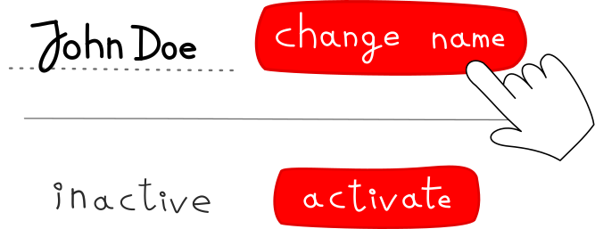

Damian Cikowski & Robert Kawecki
"SOA and REST - Tying the knot"
2016-07-13
Act I: Preparation
- So you're writing an app?
Why REST?
- Popular with good language support
- Simple usage via hypermedia
Why not?
- Rich functionalities
- POST /documents/123/print
- Reserve items in a warehouse for an order
- Business intent
- Why was a discount applied?
- Fine granularity
SOA
- Precise specification of behavior
- Returning data that is not state
The trouble with services
- The more the merrier
- ...until you have 250 of them
- Lots of API surface
A Hybrid?
- Simple data reading (REST)
- Complex commands (RPC)
Act II: Retrospection
- DDD and CQRS
- Event Sourcing → services return events
Commands
- JSON-RPC over WebSocket
- Client library: esdf-ws-client
Queries
- Single service that emulates HTTP GET for performance
- Universal language: RQL
GUI
- Task-based UI
- React.js: actions → commands
- Event handlers in Flux stores mapped 1:1 to Domain Events

Act III: Finale
- A new age for APIs?
- Probably not.
- But don't be afraid to use with large apps.